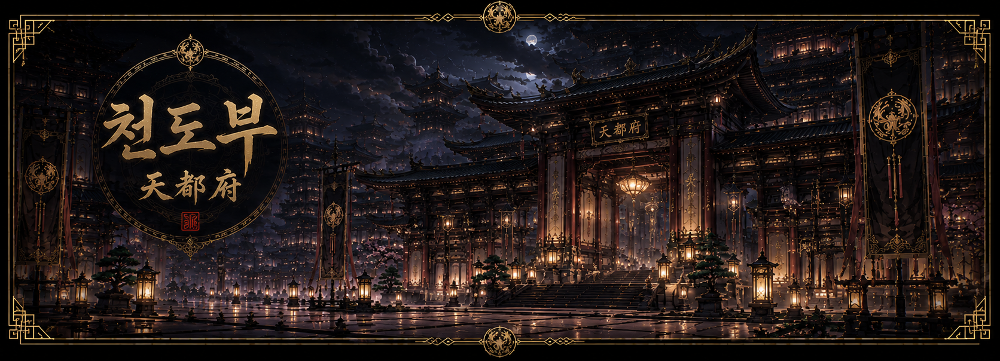
武林特區
정파도 출근하고, 사파도 세금 낸다.
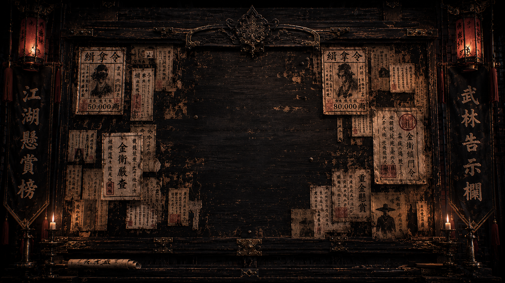
武林特區
Wuxia Special City
※ 입장 시 배경음악이 재생됩니다.無林特區 情報組織
잔향 殘響
무림특구에 남겨진 인물 기록을 열람합니다.
죽은 자의 이름도, 사라진 자의 흔적도,
잔향의 기록고에서는 지워지지 않습니다.
황실기밀문서
皇室機密文書武林特區槪要
無道五年十月二十一日 皇室直屬監察官 韓有明記錄 天下大戰旣終數年 皇室爲制止無窮紛爭與報復 聚存世門派商團罪徒遊俠於一城 名曰武林特區 其初意在監視與統制 然歲月旣久 此城已非皇室一手所能掌握 市井商旅與武人同行 賞金獵人與解決士共飲一席 晝有交易 夜有流血 法度漸衰 利害爲綱 金銀買權 權勢買情 情報定人生死 此地難分善惡 唯存生存之道 故天下之人皆聚於此 求富者來 求名者來 求復讐者來 求秘密者亦來 武林特區無定路 可爲英雄 可爲巨商 可爲罪人 亦可爲無名之屍 此城所求者唯有一事 生存而已
무림특구 개요
無道 五年 十月 二十一日
황실 직속 감찰관 한유명(韓有明) 조사 기록
천하대전(天下大戰)이 끝난 지 수년이 흘렀다. 황실은 끝없는 분쟁과 보복을 막고자 살아남은 문파와 상단, 범죄조직, 유랑 무인들을 한곳에 모아 무림특구(武林特區)를 세웠다. 본래 목적은 통제와 감시였으나, 지금의 무림특구는 황실조차 완전히 손에 넣지 못한 거대한 도시가 되었다.
거리에는 상인과 무인이 함께 걷고, 현상금 사냥꾼과 해결사가 같은 객잔에서 술잔을 기울인다. 낮에는 거래가 오가고 밤에는 피가 흐른다. 사람들은 이를 이상하게 여기지 않는다. 이곳에서 칼과 은자는 같은 언어로 통하기 때문이다.
겉으로는 질서가 유지되고 있으나 그것은 법이 아닌 이해관계 위에 세워진 균형에 가깝다. 돈은 권력을 사고, 권력은 정보를 사고, 정보는 다시 사람의 목숨값을 결정한다. 선인과 악인을 구분하기 어려우며 명분보다 이익이, 정의보다 생존이 우선된다.
그러나 바로 그 때문에 수많은 인간들이 이 도시로 모여든다. 부와 명예를 얻기 위해, 잃어버린 복수를 이루기 위해, 숨겨진 비밀을 찾기 위해, 혹은 단지 살아남기 위해.
무림특구에는 정해진 길이 존재하지 않는다. 영웅이 될 수도, 거상이 될 수도, 범죄자가 될 수도, 이름 없는 시체가 될 수도 있다.
이 도시가 원하는 것은 단 하나.살아남을 것.
그 이후의 선택은 모두 스스로 결정해야 한다.
殘香 人物記錄 閱覽
잔향 인물 기록 열람
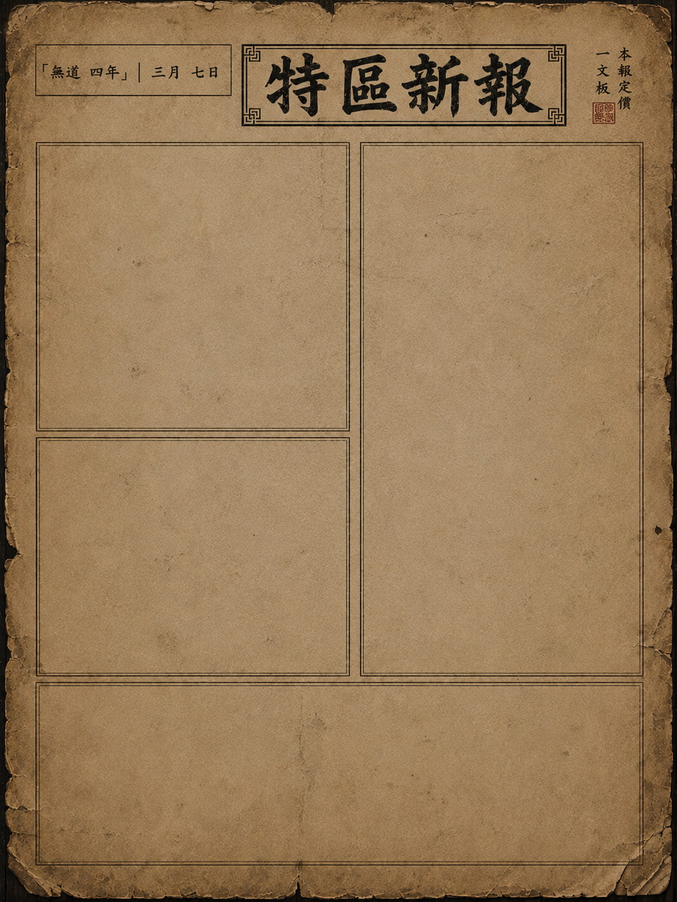
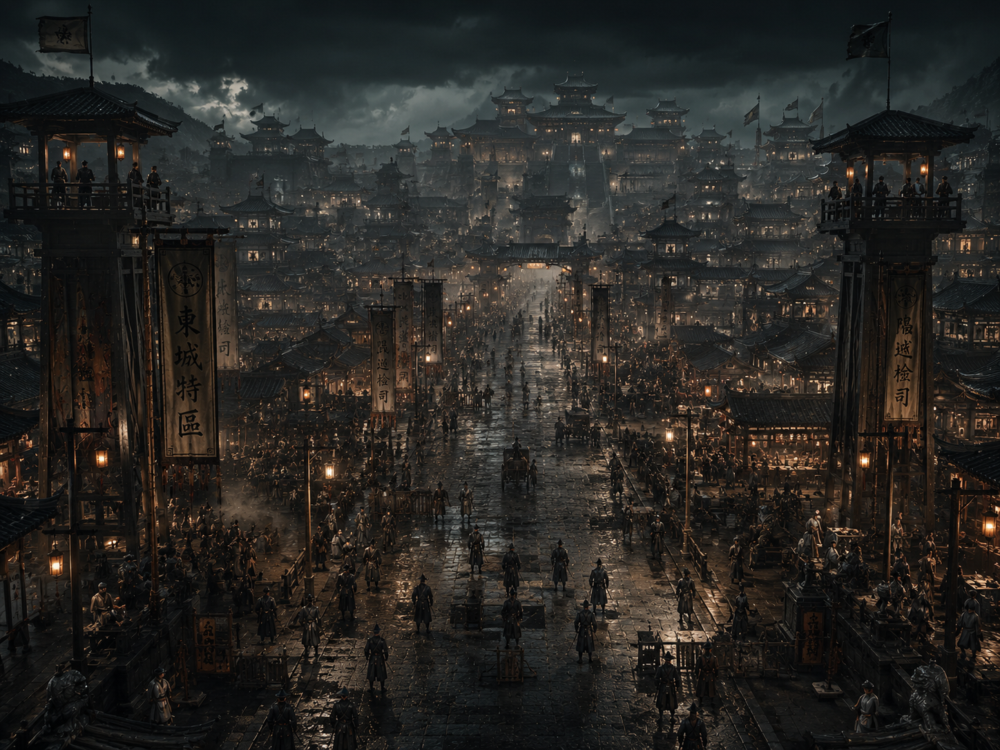
세계관
世界觀
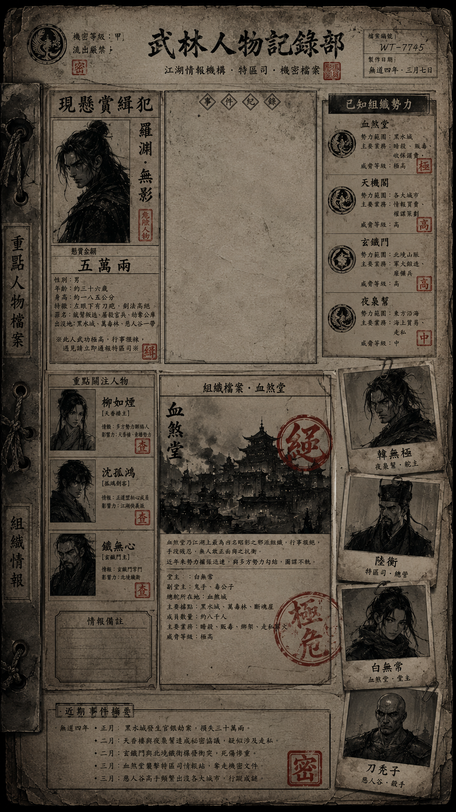
인물도감
人物圖鑑
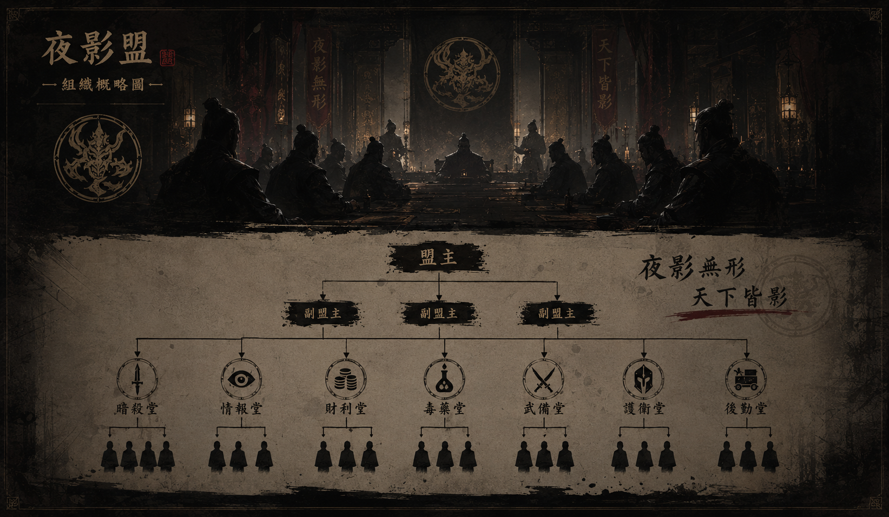
세력도감
勢力圖鑑
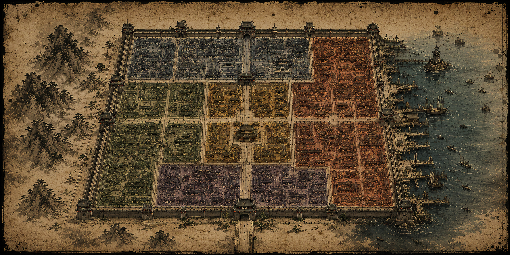
구역지도
區域地圖
인물도감
人物圖鑑무림특구 인물 열람
세력별 주요 인물 기록
勢力登錄簿
세력 등록부
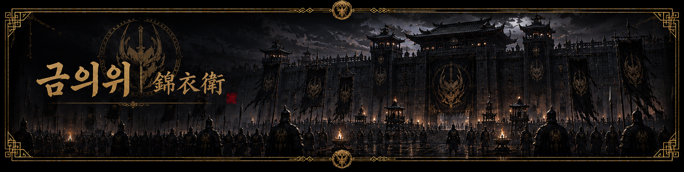
금의위
錦衣衛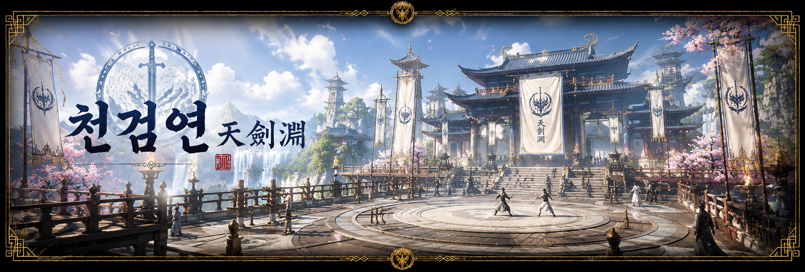
천검연
天劍聯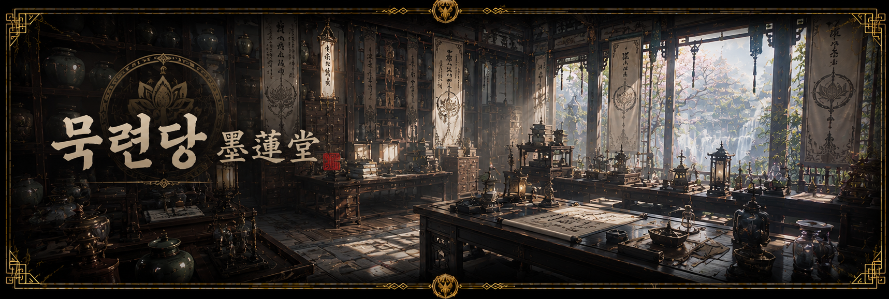
묵련당
墨蓮堂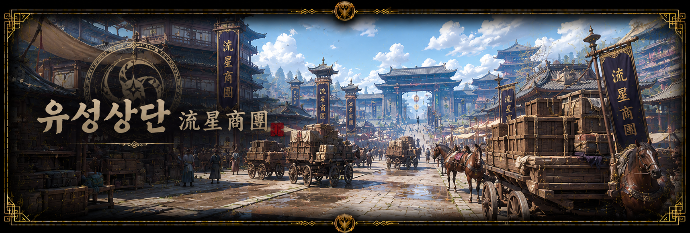
유성상단
流星商團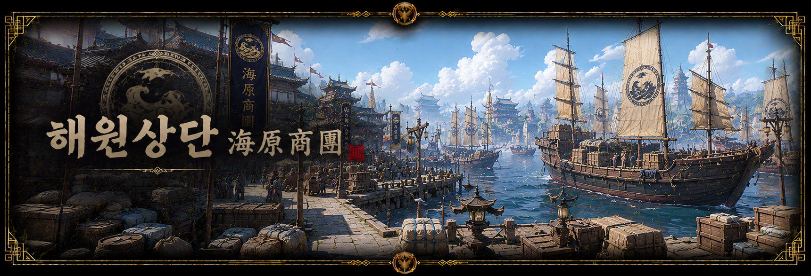
해원상단
海源商團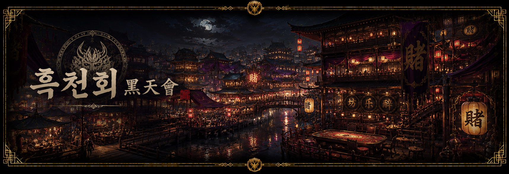
흑천회
黑天會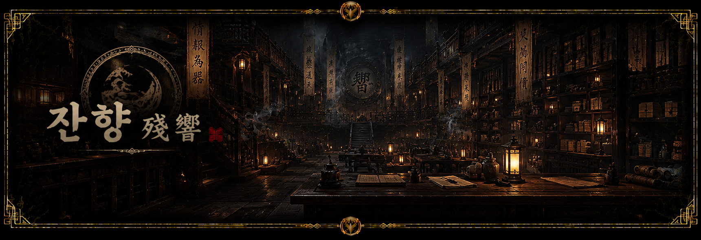
잔향
殘響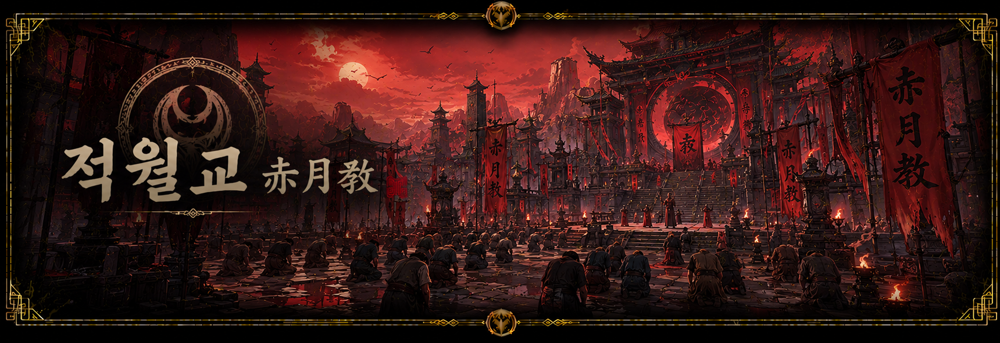
적월교
赤月敎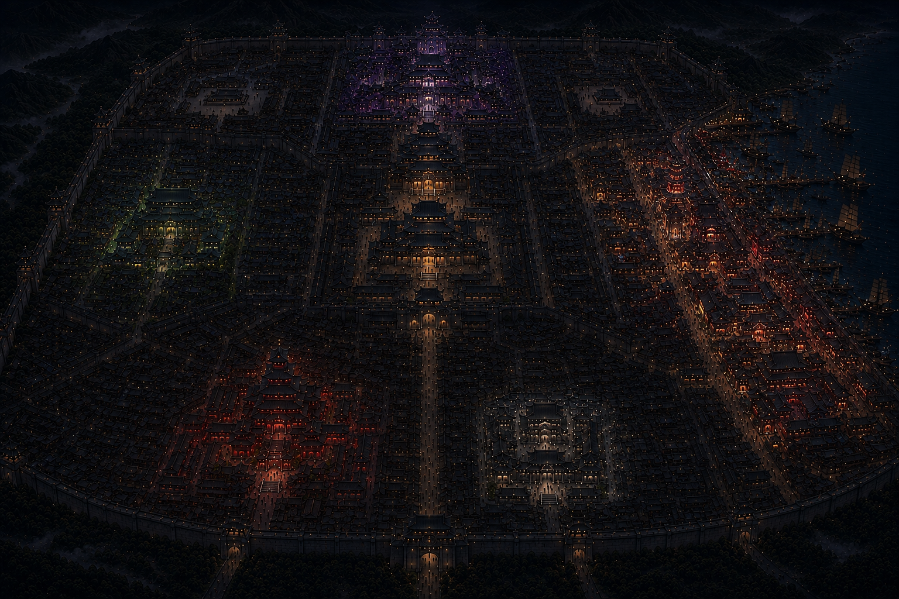
區域地圖
무림특구 구역지도
Made by 김뚝딱
- 세력
- 경지
- 성격
- 무기